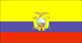
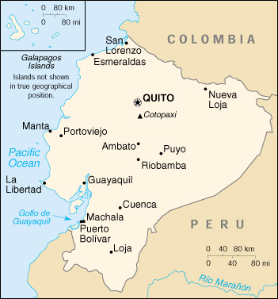

|
Ecuador |  |
| Introduction Geography People Government Economy Communications Transportation Military Transnational Issues | ||
|  | ||
| Ecuador | Introduction | Top of Page |
| Background: | The "Republic of the Equator" was one of three countries that emerged from the collapse of Gran Colombia in 1830 (the others being Colombia and Venezuela). Between 1904 and 1942, Ecuador lost territories in a series of conflicts with its neighbors. A border war with Peru that flared in 1995 was resolved in 1999. |
| Ecuador | Geography | Top of Page |
| Location: | Western South America, bordering the Pacific Ocean at the Equator, between Colombia and Peru |
| Geographic coordinates: | 2 00 S, 77 30 W |
| Map references: | South America |
| Area: |
total:
283,560 sq km
land: 276,840 sq km water: 6,720 sq km note: includes Galapagos Islands |
| Area - comparative: | slightly smaller than Nevada |
| Land boundaries: |
total:
2,010 km
border countries: Colombia 590 km, Peru 1,420 km |
| Coastline: | 2,237 km |
| Maritime claims: |
continental shelf:
claims continental shelf between mainland and Galapagos Islands
territorial sea: 200 NM |
| Climate: | tropical along coast, becoming cooler inland at higher elevations; tropical in Amazonian jungle lowlands |
| Terrain: | coastal plain (costa), inter-Andean central highlands (sierra), and flat to rolling eastern jungle (oriente) |
| Elevation extremes: |
lowest point:
Pacific Ocean 0 m
highest point: Chimborazo 6,267 m |
| Natural resources: | petroleum, fish, timber, hydropower |
| Land use: |
arable land:
6%
permanent crops: 5% permanent pastures: 18% forests and woodland: 56% other: 15% (1993 est.) |
| Irrigated land: | 5,560 sq km (1993 est.) |
| Natural hazards: | frequent earthquakes, landslides, volcanic activity; periodic droughts |
| Environment - current issues: | deforestation; soil erosion; desertification; water pollution; pollution from oil production wastes |
| Environment - international agreements: |
party to:
Antarctic-Environmental Protocol, Antarctic Treaty, Biodiversity, Climate Change, Climate Change-Kyoto Protocol, Desertification, Endangered Species, Hazardous Wastes, Nuclear Test Ban, Ozone Layer Protection, Ship Pollution, Tropical Timber 83, Tropical Timber 94, Wetlands
signed, but not ratified: none of the selected agreements |
| Geography - note: | Cotopaxi in Andes is highest active volcano in world |
| Ecuador | People | Top of Page |
| Population: | 13,183,978 (July 2001 est.) |
| Age structure: |
0-14 years:
35.8% (male 2,398,801; female 2,320,537)
15-64 years: 59.81% (male 3,900,193; female 3,984,797) 65 years and over: 4.39% (male 269,372; female 310,278) (2001 est.) |
| Population growth rate: | 2% (2001 est.) |
| Birth rate: | 25.99 births/1,000 population (2001 est.) |
| Death rate: | 5.44 deaths/1,000 population (2001 est.) |
| Net migration rate: | -0.55 migrant(s)/1,000 population (2001 est.) |
| Sex ratio: |
at birth:
1.05 male(s)/female
under 15 years: 1.03 male(s)/female 15-64 years: 0.98 male(s)/female 65 years and over: 0.87 male(s)/female total population: 0.99 male(s)/female (2001 est.) |
| Infant mortality rate: | 34.08 deaths/1,000 live births (2001 est.) |
| Life expectancy at birth: |
total population:
71.33 years
male: 68.52 years female: 74.28 years (2001 est.) |
| Total fertility rate: | 3.12 children born/woman (2001 est.) |
| HIV/AIDS - adult prevalence rate: | 0.29% (1999 est.) |
| HIV/AIDS - people living with HIV/AIDS: | 19,000 (1999 est.) |
| HIV/AIDS - deaths: | 1,400 (1999 est.) |
| Nationality: |
noun:
Ecuadorian(s)
adjective: Ecuadorian |
| Ethnic groups: | mestizo (mixed Amerindian and white) 65%, Amerindian 25%, Spanish and others 7%, black 3% |
| Religions: | Roman Catholic 95% |
| Languages: | Spanish (official), Amerindian languages (especially Quechua) |
| Literacy: |
definition:
age 15 and over can read and write
total population: 90.1% male: 92% female: 88.2% (1995 est.) |
| Ecuador | Government | Top of Page |
| Country name: |
conventional long form:
Republic of Ecuador
conventional short form: Ecuador local long form: Republica del Ecuador local short form: Ecuador |
| Government type: | republic |
| Capital: | Quito |
| Administrative divisions: | 22 provinces (provincias, singular - provincia); Azuay, Bolivar, Canar, Carchi, Chimborazo, Cotopaxi, El Oro, Esmeraldas, Galapagos, Guayas, Imbabura, Loja, Los Rios, Manabi, Morona-Santiago, Napo, Orellana, Pastaza, Pichincha, Sucumbios, Tungurahua, Zamora-Chinchipe |
| Independence: | 24 May 1822 (from Spain) |
| National holiday: | Independence Day (independence of Quito), 10 August (1809) |
| Constitution: | 10 August 1998 |
| Legal system: | based on civil law system; has not accepted compulsory ICJ jurisdiction |
| Suffrage: | 18 years of age; universal, compulsory for literate persons ages 18-65, optional for other eligible voters |
| Executive branch: |
chief of state:
President Gustavo NOBOA Bejarano (since 22 January 2000) selected president following coup that deposed President MAHUAD; Vice President Pedro PINTO Rubianes (since 28 January 2000) elected by National Congress from a slate of candidates submitted by President NABOA; note - the president is both the chief of state and head of government
head of government: President Gustavo NOBOA Bejarano (since 22 January 2000) selected president following coup that deposed President MAHUAD; Vice President Pedro PINTO Rubianes (since 28 January 2000) elected by National Congress from a slate of candidates submitted by President NABOA; note - the president is both the chief of state and head of government cabinet: Cabinet appointed by the president elections: president and vice president elected on the same ticket by popular vote for four-year term (no reelection); election last held 31 May 1998; runoff election held 12 July 1998 (next to be held NA 2002) election results: results of the last election prior to the coup were: Jamil MAHUAD elected president; percent of vote - 51% note: a military-indigenous coup toppled democratically elected President Jamil MAHAUD on 21 January 2000; the military quickly handed power over to Vice President Gustavo NOBOA on 22 January; National Congress then elected a new vice president from a slate of candidates submitted by NOBOA; the new administration is scheduled to complete the remainder of MAHAUD's term, due to expire in January 2003 |
| Legislative branch: |
unicameral National Congress or Congreso Nacional (121 seats; 79 members are popularly elected at-large nationally to serve four-year terms; 42 members are popularly elected by province - two per province - for four-year terms)
elections: last held 31 May 1998 (next to be held NA 2002) election results: percent of vote by party - NA%; seats by party - DP 32, PSC 27, PRE 24, ID 18, P-NP 9, FRA 5, PCE 3, MPD 2, CFP 1; note - defections by members of National Congress are commonplace, resulting in frequent changes in the numbers of seats held by the various parties |
| Judicial branch: | Supreme Court or Corte Suprema (new justices are elected by the full Supreme Court) |
| Political parties and leaders: | Concentration of Popular Forces or CFP [Averroes BUCARAM]; Democratic Left or ID [Rodrigo BORJA Cevallos]; Ecuadorian Conservative Party or PCE [Sixto DURAN Ballen]; Independent National Movement or MIN [leader NA]; Pachakutik-New Country or P-NP [Rafael PANDAM]; Popular Democracy or DP [Ramiro RIVERA]; Popular Democratic Movement or MPD [leader NA]; Radical Alfarista Front or FRA [Fabian ALARCON, director]; Roldosist Party or PRE [Abdala BUCARAM Ortiz, director]; Social Christian Party or PSC [Jaime NEBOT Saadi, president] |
| Political pressure groups and leaders: | Confederation of Indigenous Nationalities of Ecuador or CONAIE [Antonio VARGAS]; Coordinator of Social Movements or CMS [F. Napoleon SANTOS]; Popular Front or FP [Luis VILLACIS] |
| International organization participation: | CAN, CCC, ECLAC, FAO, G-11, G-77, IADB, IAEA, IBRD, ICAO, ICC, ICFTU, ICRM, IDA, IFAD, IFC, IFRCS, IHO, ILO, IMF, IMO, Intelsat, Interpol, IOC, IOM, ISO, ITU, LAES, LAIA, NAM, OAS, OPANAL, OPCW, PCA, RG, UN, UNCTAD, UNESCO, UNIDO, UPU, WCL, WFTU, WHO, WIPO, WMO, WToO, WTrO |
| Diplomatic representation in the US: |
chief of mission:
Ambassador Ivonne A-BAKI
chancery: 2535 15th Street NW, Washington, DC 20009 telephone: [1] (202) 234-7200 FAX: [1] (202) 667-3482 consulate(s) general: Chicago, Houston, Los Angeles, Miami, New Orleans, New York, Newark, Philadelphia, and San Francisco |
| Diplomatic representation from the US: |
chief of mission:
Ambassador Gwen C. CLARE
embassy: Avenida 12 de Octubre y Avenida Patria, Quito mailing address: APO AA 34039 telephone: [593] (2) 562-890 FAX: [593] (2) 502-052 consulate(s) general: Guayaquil |
| Flag description: | three horizontal bands of yellow (top, double width), blue, and red with the coat of arms superimposed at the center of the flag; similar to the flag of Colombia which is shorter and does not bear a coat of arms |
| Ecuador | Economy | Top of Page |
| Economy - overview: | Ecuador has substantial oil resources and rich agricultural areas. Because the country exports primary products such as oil, bananas, and shrimp, fluctuations in world market prices can have a substantial domestic impact. Ecuador joined the World Trade Organization in 1996, but has failed to comply with many of its accession commitments. In recent years, growth has been uneven due to ill-conceived fiscal stabilization measures. The aftermath of El Nino and depressed oil market of 1997-98 drove Ecuador's economy into a free-fall in 1999. The beginning of 1999 saw the banking sector collapse, which helped precipitate an unprecedented default on external loans later that year. Continued economic instability drove a 70% depreciation of the currency throughout 1999, which eventually forced a desperate government to "dollarize" the currency regime in 2000. The move stabilized the currency, but did not stave off the ouster of the government. The new president, Gustavo NOBOA has yet to complete negotiations for a long sought IMF accord. He will find it difficult to push through the reforms necessary to make "dollarization" work in the long run. |
| GDP: | purchasing power parity - $37.2 billion (2000 est.) |
| GDP - real growth rate: | 0.8% (2000 est.) |
| GDP - per capita: | purchasing power parity - $2,900 (2000 est.) |
| GDP - composition by sector: |
agriculture:
14%
industry: 36% services: 50% (1999 est.) |
| Population below poverty line: | 50% (1999 est.) |
| Household income or consumption by percentage share: |
lowest 10%:
2.2%
highest 10%: 33.8% (1995) |
| Inflation rate (consumer prices): | 96% (2000 est.) |
| Labor force: | 4.2 million |
| Labor force - by occupation: | agriculture 30%, industry 25%, services 45% (1999 est.) |
| Unemployment rate: | 13%; note - widespread underemployment (2000 est.) |
| Budget: |
revenues:
planned $5.1 billion (not including revenue from potential privatizations)
expenditures: $5.1 billion, including capital expenditures of $NA (1999) |
| Industries: | petroleum, food processing, textiles, metal work, paper products, wood products, chemicals, plastics, fishing, lumber |
| Industrial production growth rate: | 2.4% (1997 est.) |
| Electricity - production: | 10.065 billion kWh (1999) |
| Electricity - production by source: |
fossil fuel:
29.51%
hydro: 70.49% nuclear: 0% other: 0% (1999) |
| Electricity - consumption: | 9.386 billion kWh (1999) |
| Electricity - exports: | 0 kWh (1999) |
| Electricity - imports: | 25 million kWh (1999) |
| Agriculture - products: | bananas, coffee, cocoa, rice, potatoes, manioc (tapioca), plantains, sugarcane; cattle, sheep, pigs, beef, pork, dairy products; balsa wood; fish, shrimp |
| Exports: | $5.6 billion (f.o.b., 2000 est.) |
| Exports - commodities: | petroleum, bananas, shrimp, coffee, cocoa, cut flowers, fish |
| Exports - partners: | US 37%, Colombia 5%, Italy 5%, Chile 5%, Peru 4% (1999) |
| Imports: | $3.4 billion (f.o.b., 2000 est.) |
| Imports - commodities: | machinery and equipment, raw materials, fuels; consumer goods |
| Imports - partners: | US 30%, Colombia 13%, Venezuela 6%, Japan 5%, Venezuela 6%, Mexico 3% (1998) |
| Debt - external: | $15 billion (1999) |
| Economic aid - recipient: | $695.7 million (1995) |
| Currency: | US dollar (USD) |
| Currency code: | USD |
| Exchange rates: |
sucres per US dollar - 25,000 (January 2001), 24,988.4 (2000), 11,786.8 (1999), 5,446.6 (1998), 3,988.3 (1997), 3,189.5 (1996)
note: on 7 January 2000, the government passed a decree "dollarizing" the economy; on 13 March 2000, the National Congress approved a new exchange system whereby the US dollar is adopted as the main legal tender in Ecuador for all purposes; on 20 March 2000, the Central Bank of Ecuador started to exchange sucres for US dollars at a fixed rate of 25,000 sucres per US dollar; since 30 April 2000, all transactions are denominated in US dollars |
| Fiscal year: | calendar year |
| Ecuador | Communications | Top of Page |
| Telephones - main lines in use: | 899,000 (1997) |
| Telephones - mobile cellular: | 160,061 (1997) |
| Telephone system: |
general assessment:
NA
domestic: facilities generally inadequate and unreliable international: satellite earth station - 1 Intelsat (Atlantic Ocean) |
| Radio broadcast stations: | AM 392, FM 27, shortwave 29 (1998) |
| Radios: | 4.15 million (1997) |
| Television broadcast stations: | 15 (including one station on the Galapagos Islands) (1997) |
| Televisions: | 1.55 million (1997) |
| Internet country code: | .ec |
| Internet Service Providers (ISPs): | 13 (2000) |
| Internet users: | 20,000 (2000) |
| Ecuador | Transportation | Top of Page |
| Railways: |
total:
965 km
narrow gauge: 965 km 1.067-m gauge (2000) |
| Highways: |
total:
43,197 km
paved: 8,165 km unpaved: 35,032 km (1999 est.) |
| Waterways: | 1,500 km |
| Pipelines: | crude oil 800 km; petroleum products 1,358 km |
| Ports and harbors: | Esmeraldas, Guayaquil, La Libertad, Manta, Puerto Bolivar, San Lorenzo |
| Merchant marine: |
total:
30 ships (1,000 GRT or over) totaling 233,312 GRT/385,784 DWT
ships by type: cargo 2, chemical tanker 1, liquefied gas 1, passenger 3, petroleum tanker 22, specialized tanker 1 (2000 est.) |
| Airports: | 180 (2000 est.) |
| Airports - with paved runways: |
total:
59
over 3,047 m: 2 2,438 to 3,047 m: 5 1,524 to 2,437 m: 18 914 to 1,523 m: 15 under 914 m: 19 (2000 est.) |
| Airports - with unpaved runways: |
total:
121
914 to 1,523 m: 32 under 914 m: 89 (2000 est.) |
| Heliports: | 1 (2000 est.) |
| Ecuador | Military | Top of Page |
| Military branches: | Army (Ejercito Ecuatoriano), Navy (Armada Ecuatoriana, includes Marines), Air Force (Fuerza Aerea Ecuatoriana), National Police (Policia Nacional) |
| Military manpower - military age: | 20 years of age |
| Military manpower - availability: | males age 15-49: 3,382,567 (2001 est.) |
| Military manpower - fit for military service: | males age 15-49: 2,280,899 (2001 est.) |
| Military manpower - reaching military age annually: | males: 132,978 (2001 est.) |
| Military expenditures - dollar figure: | $720 million (FY98) |
| Military expenditures - percent of GDP: | 3.4% (FY98) |
| Ecuador | Transnational Issues | Top of Page |
| Disputes - international: | none |
| Illicit drugs: | significant transit country for cocaine and derivatives of coca originating in Colombia and Peru; importer of precursor chemicals used in production of illicit narcotics; important money-laundering hub; increased activity on the northern frontier by trafficking groups and Colombian insurgents |
{kind=link}
{kind=link}